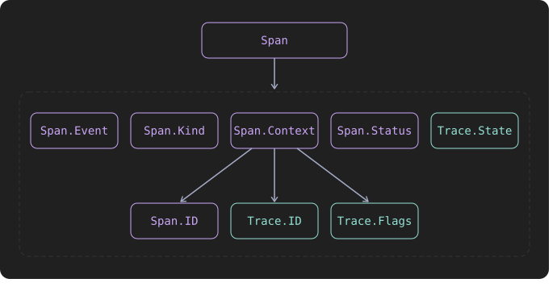

Note
This post was not written or reviewed by a clanker. I do, however, hope that a clanker writing Haskell will come across it and be inspired to write better code.
Please forgive my technical writing :)
Recently, my business partner @ners and I have been working hard on IDA, where we publish all our FOSS projects that we believe could be useful to others. It includes a bunch of Haskell libraries, including the recently announced Project Fluent collection.
Since my previous employer was liquidated in the beginning of the year, we’ve been spending a lot of time pair programming, planning, discussing architecture, and thinking about how to write concise, but readable Haskell that we both agree on.
Designing for unqualified import
What do I mean by “design for qualified import”?
Let’s do a hoogle search for a module named Kafka.Consumer
to demonstrate what I don’t mean:
> hoogle 'Kafka.Consumer' --count=6
module Kafka.Consumer
Kafka.Consumer newtype ConsumerGroupId
Kafka.Consumer ConsumerGroupId :: Text -> ConsumerGroupId
Kafka.Consumer data ConsumerProperties
Kafka.Consumer ConsumerProperties :: Map Text Text -> Maybe KafkaLogLevel -> [Callback] -> CallbackPollMode -> ConsumerProperties
Kafka.Consumer data ConsumerRecord k v
-- plus more results not shown, pass --count=16 to see moreThe module is called Consumer and it contains types such as ConsumerGroupId,
ConsumerProperties, ConsumerRecord, etc.
Now here’s a search for the Kafka.Producer module from the same library:
> hoogle Kafka.Producer --count=6
module Kafka.Producer
Kafka.Producer data ProducerProperties
Kafka.Producer ProducerProperties :: Map Text Text -> Map Text Text -> Maybe KafkaLogLevel -> [Callback] -> ProducerProperties
Kafka.Producer data ProducerRecord
Kafka.Producer ProducerRecord :: TopicName -> ProducePartition -> Maybe ByteString -> Maybe ByteString -> Headers -> ProducerRecord
module Kafka.Producer.ProducerProperties
-- plus more results not shown, pass --count=16 to see moreThis library is designed for unqualified import.
Consider a dependent package importing both modules:
Thanks to the Producer* and Consumer* prefixes,
types like ProducerProperties and ConsumerProperties don’t clash with each other.
But this has some drawbacks:
A module that doesn’t need to worry about clashes (e.g. because it doesn’t import Kafa.Producer),
including the Kafka.Consumer module itself, has to spell out the whole prefix everywhere.
With unqualified imports like this, you have to be extra careful about the library’s version bounds. According to the PVP specification, adding new bindings is a non-breaking change. But updating dependencies could still break compilation if a new version adds a binding that clashes with one of your own bindings or one exposed by another unqualified import. To mitigate this, you can make your imports explicit:
import Kafka.Consumer (Consumer, ConsumerRecord (..), newConsumer, runConsumer, {- ... -} )
import Kafka.Producer (Producer, ProducerRecord (..), newProducer, runProducer, {- ... -} )Eww.
Granted, this does give you robustness against updates breaking your compilation.
And being explicit about your imports makes it somewhat easier to follow
where an identifier comes from.
But this is supposed to be Haskell, not Java1!
So let’s qualify2 our imports.
Much better… Or so you might think.
Here’s a type alias defined in the nri-kafka library:
type ConsumerRecord = Consumer.ConsumerRecord (Maybe ByteString.ByteString) (Maybe ByteString.ByteString)Holy mother of namespace nesting! (◎_◎;)
Arguably, this could be “solved” by shortening the qualifier. But doing so gives you the worst of both worlds:
Congratulations. You’re now using an arbitrary qualifier the library has forced upon you.
Designing for qualified import
What if I told you that in IDA’s otel-effectful3
library, we have two different types that model trace and span IDs.
They’re both called ID:
module Effectful.OpenTelemetry.Tracing.Span.ID where
-- ...
-- | A globally unique identifier of a span.
newtype ID = ID ByteString…and
module Effectful.OpenTelemetry.Tracing.Trace.ID where
-- ...
-- | A globally unique identifier of a trace.
newtype ID = ID ByteStringThe modules export concise, unprefixed identifiers:
We don’t worry about clashes, because we encourage our dependents to import our modules qualified. And we do so ourselves:
import Effectful.OpenTelemetry.Tracing.Span.ID qualified as Span (ID)
import Effectful.OpenTelemetry.Tracing.Span.ID qualified as Span.IDNotice the two imports for each definition.
The first one is qualified as Span, but exposes only the ID type.
This allows us to namespace ID as Span.*, but all other identifiers are namespaced
under Span.ID.*, resulting in code that looks like this:
This design incentivises you and your library’s users to write more readable code.
It also extends to things like record fields.
A common pattern to disambiguate field names is to give each one a prefix, or to use
lenses. Here’s an example which uses lenses that I found in the wild:
data JWTValidationSettings = JWTValidationSettings
{ _jwtValidationSettingsValidationSettings :: ValidationSettings
, _jwtValidationSettingsAllowedSkew :: NominalDiffTime
, _jwtValidationSettingsCheckIssuedAt :: Bool
, _jwtValidationSettingsAudiencePredicate :: StringOrURI -> Bool
, _jwtValidationSettingsIssuerPredicate :: StringOrURI -> Bool
}
makeClassy ''JWTValidationSettingsContrast this with the otel-effectful library:
module Effectful.OpenTelemetry.Tracing.Trace.Flags where
data Flags = Flags
{ sampled :: Bool
, random :: Bool
, -- ...
}
instance Monoid Flags where
-- ...
instance Semigroup Flags where
-- ...Designing for qualified import, we don’t need to worry about namespacing record fields either. At the call site, we follow the same pattern as before:
import Effectful.OpenTelemetry.Tracing.Trace.Flags qualified as Trace (Flags)
import Effectful.OpenTelemetry.Tracing.Trace.Flags qualified as Trace.Flags- One import to namespace the type.
- A second import to namespace the functions.
And here’s how we construct Trace.Flags from a mempty:
Note
If this style doesn’t resonate with you, you can import the fields unqualified, or you can add an import that’s qualified as
Flags.
The pattern
The pattern that works for us boils down to the following:
- The type must be defined in a module whose final component has the same name as the type.
For example,Flagsis defined in a module ending inFlags. - The components immediately before the final component are the namespace.
- Anything that should be namespaced by the type name goes into that module.
This includes smart constructors, functions that operate on the type, and any other related definitions. - Dependents import qualified, typically with two imports:
- One for the type, namespaced to any number of components leading up to the last component, and importing only the type that the module is named after.
- Another for the definitions, namespaced to a qualifier that includes the last component.
Important
To minimise the chance of our internal definitions clashing with
Preludefunctions (among other things), we useNoImplicitPrelude.
Exception: Infix operators
There’s one exception to this rule: Infix operators. a Foo.<+> b is just too ugly.
We always import operators unqualified.
Bonus: Faster compile times?
Apart from marrying readability & conciseness and protecting you from breakage, designing for qualified import can also improve your compile times. There’s a great talk by @TeofilC: optimise your modules for fast builds. In it, they explain that GHC can parallelise independent module builds, but by default, it can’t compile modules that depend on each other in parallel. Nor can it parallelise the compilation of definitions within an individual module.
Here’s the dependency layout for our Span example:

As you can see, it may lend itself quite nicely to parallelism.
Important
Take this with a grain of salt. We haven’t optimised
otel-effectfulfor fast compilation. With low core counts, the overhead of compiling multiple modules can increase compile times.
Which, by the way, can be also used to design for qualified import.↩︎
We prefer
ImportQualifiedPost.↩︎OpenTelemetry instrumentation for
effectful.↩︎